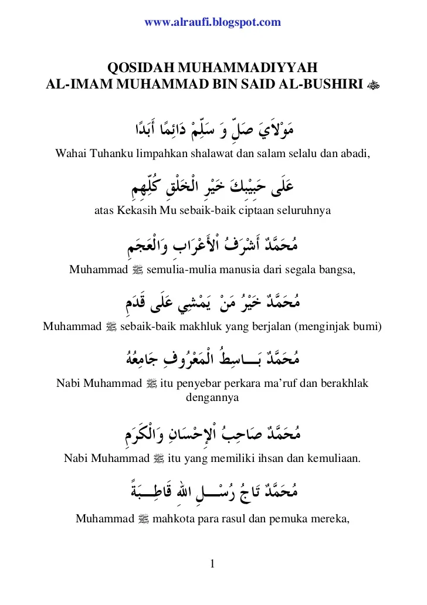

Sholatun

Bagian 1
Cover

Biografi Pengarang
Al-Habib Ali bin Muhammad bin Hussein Al-Habsyi
Beliau dibesarkan di bawah asuhan dan pengawasan kedua orang tuanya; ayahandanya, Al-Imam Al-Arif Billah Muhammad bin Husin bin Abdullah Al-Habsyi dan ibundanya; As-Syarifah Alawiyyah binti Husain bin Ahmad Al-Hadi Al-Jufri, yang pada masa itu terkenal sebagai seorang wanita yang salihah yang amat bijaksana.
Pada usia yang amat muda, Habib Ali Al-Habsyi telah mempelajari dan mengkhatamkan Al-Quran dan berhasil menguasai ilmu-ilmu zahir dan batin sebelum mencapai usia yang biasanya diperlukan untuk itu. Oleh karenanya, sejak itu, beliau diizinkan oleh para guru dan pendidiknya untuk memberikan ceramah-ceramah dan pengajian-pengajian di hadapan khalayak ramai, sehingga dengan cepat sekali, dia menjadi pusat perhatian dan kekaguman serta memperoleh tempat terhormat di hati setiap orang. Kepadanya diserahkan tampuk kepimpinan tiap majlis ilmu, lembaga pendidikan serta pertemuan-pertemuan besar yang diadakan pada masa itu.
Selanjutnya, beliau melaksanakan tugas-tugas suci yang dipercayakan padanya dengan sebaik-baiknya. Menghidupkan ilmu pengetahuan agama yang sebelumnya banyak dilupakan. Mengumpulkan, mengarahkan dan mendidik para siswa agar menuntut ilmu, di samping membangkitkan semangat mereka dalam mengejar cita-cita yang tinggi dan mulia.
SIMTHUD DURAR - UNTAIAN MUTIARA Oleh: Al-Habib Ali bin Muhammad bin Hussein Al-Habsyi.